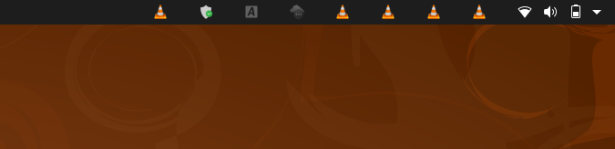

vlc在ubuntu20.04上的一个bug与解决 发表于 2021-03-16 ubuntu20.04下vlc会停留在top bar上  参考这个帖子 解决方案是进入Tools > Preferences, 之后进入 Inputs/Codec 将Hardware Accelerated decoding 更改为除了Automatic和VDPAU之外的其他选项, 比如默认 强制停止vlc: 1killall -9 vlc -------------end------------- 本文作者： ouyen 本文链接： https://ouyen.github.io/vlc-bug/ 版权声明： 本博客所有文章除特别声明外，均采用 BY-NC-SA 许可协议。转载请注明出处！